Point : -99.05°E, 40.70°N (Kearney, Nebraska · Ogallala) · Saison été 2025 · 100% données réelles récupérées le jour même · chaque carte porte ses axes lon/lat, son échelle et sa flèche nord.
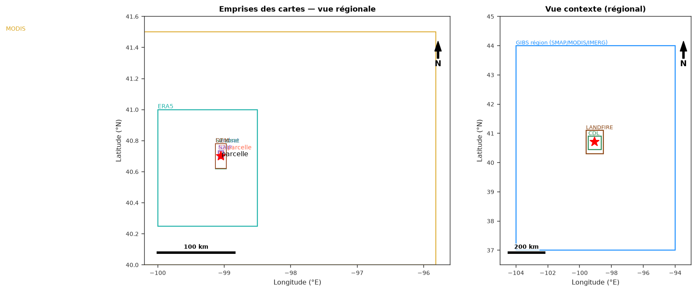
Réponse à "sont-ils tous de la même zone ?" : non. Les rasters Sentinel-2/Landsat/DEM sont calés sur la zone ~14×18 km, NAIP et S2-zoom sur la parcelle ~6×5 km, MODIS/ERA5 couvrent la région (~560 km et ~165 km), les tuiles GIBS tout le Nebraska (~1000 km), et les granules ECOSTRESS des bandes orbitales ~1.3°. La colonne « Emprise » de chaque fiche donne le détail exact.
| Jeu de données | Emprise [Ouest, Sud, Est, Nord] | Résolution | Date / scène |
|---|---|---|---|
| s2 | [-99.1304, 40.62, -98.97, 40.7801] | 10.0 m | 2025-08-14 |
| landsat | [-99.1305, 40.6201, -98.9702, 40.7802] | 30.0 m | 2025-07-05 |
| dem | [-99.1301, 40.6201, -98.9701, 40.7801] | 30 m | DEM statique |
| naip | [-99.0901, 40.685, -99.01, 40.735] | 1.2 m (décimé) | 2022-07-18 |
| modis | [-102.2841, 40.0, -95.8169, 41.5] | 231.7 m | 2025-07 (16j) |
| era5 | [-100.0, 40.25, -98.5, 41.0] | 0.25° (~28 km) | 2025-07-15 |
| s2zoom | [-99.0901, 40.6851, -99.0101, 40.7351] | 10.0 m | 2025-08-14 |
| cdl_2020 | [-99.45, 40.45, -98.65, 40.9] | 30 m source / rendu WMS | 2020 |
| cdl_2021 | [-99.45, 40.45, -98.65, 40.9] | 30 m source / rendu WMS | 2021 |
| cdl_2022 | [-99.45, 40.45, -98.65, 40.9] | 30 m source / rendu WMS | 2022 |
| cdl_2023 | [-99.45, 40.45, -98.65, 40.9] | 30 m source / rendu WMS | 2023 |
| cdl_2024 | [-99.45, 40.45, -98.65, 40.9] | 30 m source / rendu WMS | 2024 |
| gibs_smap_rz | [-104.0, 37.0, -94.0, 44.0] | tuile rendue (~native) | 2025-07-15 |
| gibs_smap_surf | [-104.0, 37.0, -94.0, 44.0] | tuile rendue (~native) | 2025-07-15 |
| gibs_smap_gpp | [-104.0, 37.0, -94.0, 44.0] | tuile rendue (~native) | 2025-07-15 |
| gibs_grace | [-104.0, 37.0, -94.0, 44.0] | tuile rendue (~native) | dernier dispo |
| gibs_imerg | [-104.0, 37.0, -94.0, 44.0] | tuile rendue (~native) | 2025-07-15 |
| gibs_modis_ndvi | [-104.0, 37.0, -94.0, 44.0] | tuile rendue (~native) | 2025-07-11 |
| gibs_modis_lst | [-104.0, 37.0, -94.0, 44.0] | tuile rendue (~native) | 2025-07-11 |
| gibs_viirs_ndvi | [-104.0, 37.0, -94.0, 44.0] | tuile rendue (~native) | 2025-07-11 |
| landfire | [-99.6, 40.3, -98.5, 41.1] | 30 m (rendu WMS) | LF2024 |
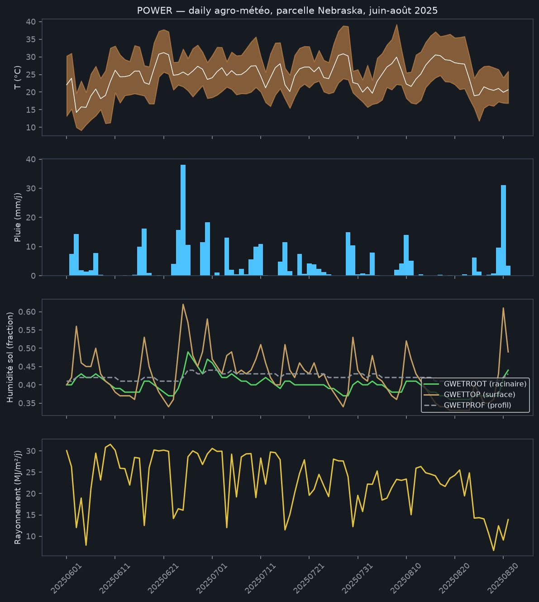
| Provenance | API POWER daily · point -99.05, 40.70 · juin-août 2025 · 15 paramètres |
|---|
🔎 Ce que c'est : Série temporelle météo complète d'un point : températures min/max/moy, pluie quotidienne, humidité du sol estimée (surface GWETTOP, racinaire GWETROOT, profil GWETPROF), rayonnement solaire.
💡 Ce que j'en tire : C'est LA source la plus simple du lot : un appel JSON, aucun login, couverture mondiale. On voit l'été 2025 : T max régulières >30°C, pluies épisodiques (~10-20 mm), sol racinaire souvent <50% de saturation en août — contexte idéal pour parler de stress hydrique et du choix de cultures tolérantes.
✅ INDISPENSABLE — base météo de l'app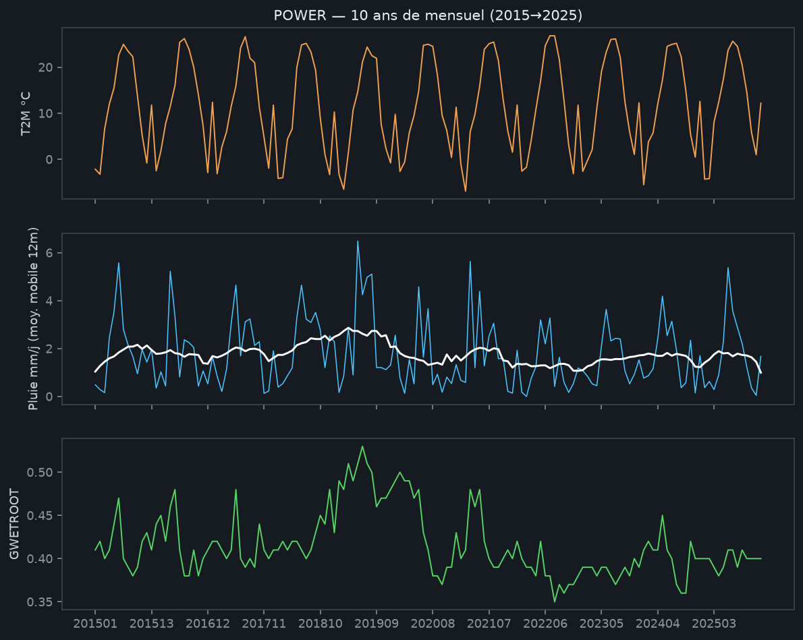
| Provenance | API POWER monthly · même point · 2015-2025 |
|---|
🔎 Ce que c'est : Dix ans de mensuels : T2M, pluie, humidité racinaire. La ligne blanche est la moyenne mobile 12 mois.
💡 Ce que j'en tire : Permet de sortir du 'une seule année' : tendances long terme, hivers secs répétés, variabilité inter-annuelle forte des pluies d'été — argument clé du brief (s'adapter au changement climatique).
✅ UTILE — contexte décennal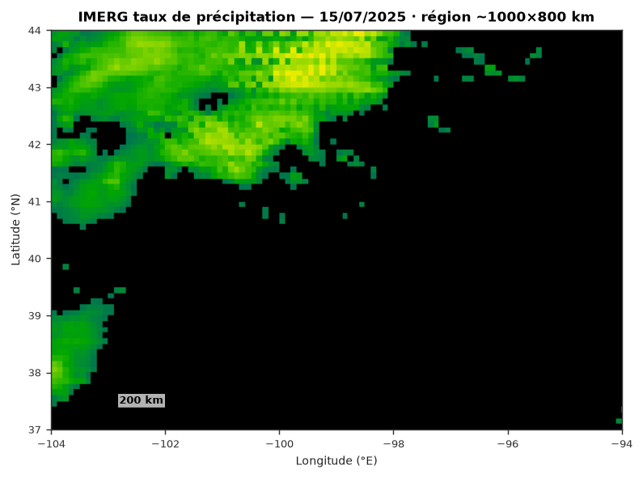
| Provenance | GIBS WMS · couche IMERG_Precipitation_Rate · 15/07/2025 · -104.000…-94.000°E · 37.000…44.000°N · ≈846 × 774 km · rés tuile rendue (~native) |
|---|
🔎 Ce que c'est : Carte du taux de précipitation mesuré par la constellation GPM sur tout le Nebraska ce jour-là.
💡 Ce que j'en tire : Résolution ~10 km : trop grossier pour LA parcelle mais parfait pour situer un épisode pluvieux régional. En démo, c'est un fond de carte ; en prod, POWER (même grille) donne déjà la série chiffrée — IMERG sert surtout aux extrêmes (averse 30 min).
🟡 CONTEXTUEL — belle carte, données par ailleurs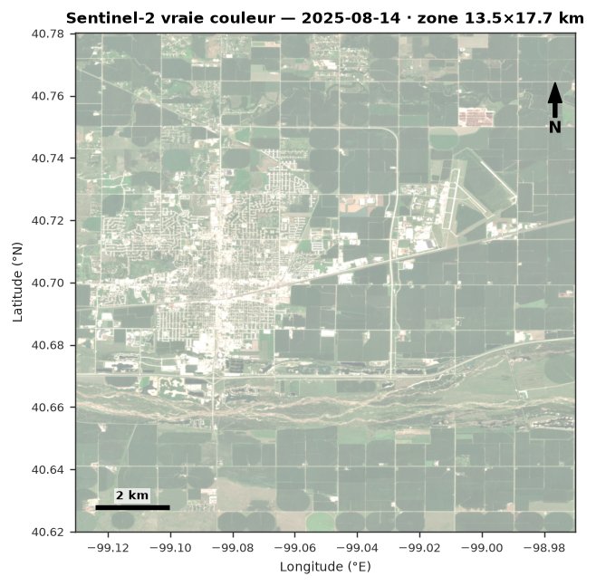
| Provenance | Sentinel-2 L2A · scène S2B 2025-08-14 · nuages 0.2% · -99.130…-98.970°E · 40.620…40.780°N · ≈14 × 18 km · rés 10.0 m |
|---|
🔎 Ce que c'est : Vraie couleur 10 m : ville de Kearney (gris), Platter River, parcelles agricoles, pivots d'irrigation.
💡 Ce que j'en tire : La scène du 14/08 couvre TOUTE la zone — après avoir découvert que d'autres granules du même tile étaient des datastrips partiels. Réalité du terrain : damier de ~160 ha, riverbottom irrigué.
✅ RÉFÉRENCE VISUELLE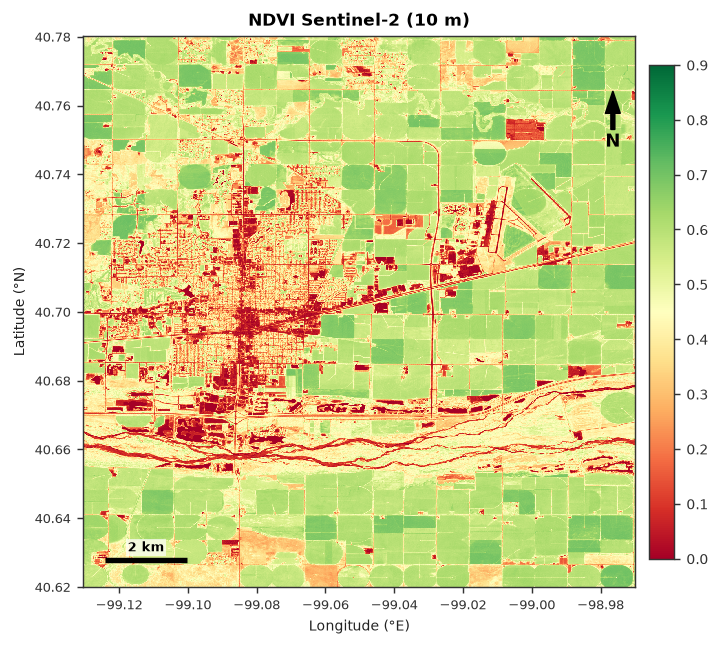
| Provenance | même scène · NDVI=(B08-B04)/(B08+B04) |
|---|
🔎 Ce que c'est : NDVI 10 m : ville en rouge (pas de végétation), cultures vertes, sol nu/sénescent jaune-orange.
💡 Ce que j'en tire : Outil de diagnostic principal : hétérogénéité intra-parcellaire visible (pivots verts vs coins secs), riverbottom contrasté. C'est sur ça qu'on repère le stress végétal et qu'on valide les couverts.
✅ CŒUR DE L'APP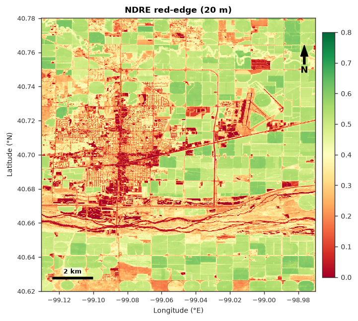
| Provenance | même scène · NDRE red-edge 20 m |
|---|
🔎 Ce que c'est : Indice red-edge, plus sensible à la chlorophylle que le NDVI : détecte le stress AVANT qu'il soit visible en NDVI.
💡 Ce que j'en tire : Utile pour un signal d'alerte précoce (stress azote/eau). Bonus crédibilité scientifique — coûte rien, même scène.
✅ UTILE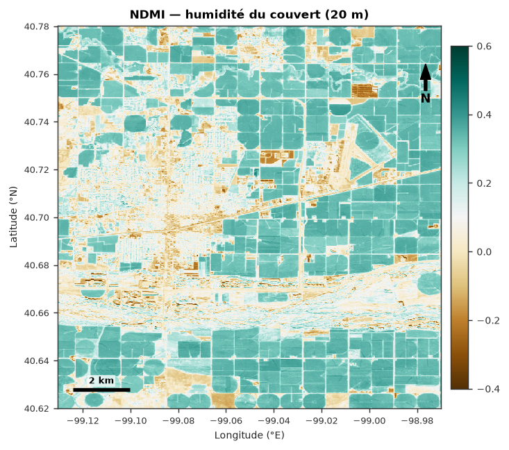
| Provenance | même scène · NDMI=(B08-B11)/(B08+B11) 20 m |
|---|
🔎 Ce que c'est : Contenu en eau du couvert végétal (bande SWIR).
💡 Ce que j'en tire : Complément direct du stress hydrique : couplé à l'ET ECOSTRESS ça raconte qui transpire vraiment.
✅ UTILE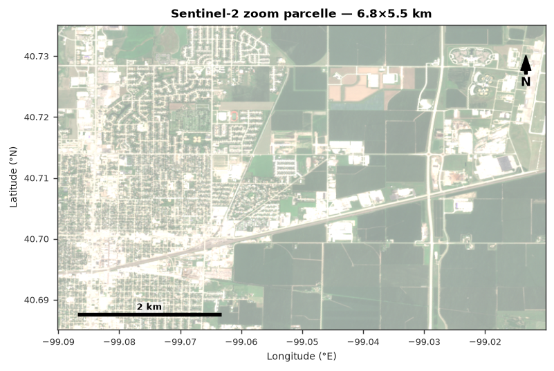
| Provenance | même scène · -99.090…-99.010°E · 40.685…40.735°N · ≈7 × 6 km · rés 10.0 m |
|---|
🔎 Ce que c'est : Zoom ~7 km sur la parcelle de démo : on distingue les limites de champs, chemins, pivots.
💡 Ce que j'en tire : Échelle de travail réelle du fermier — 10 m suffit pour suivre un champ.
✅ ÉCHELLE PARCELLE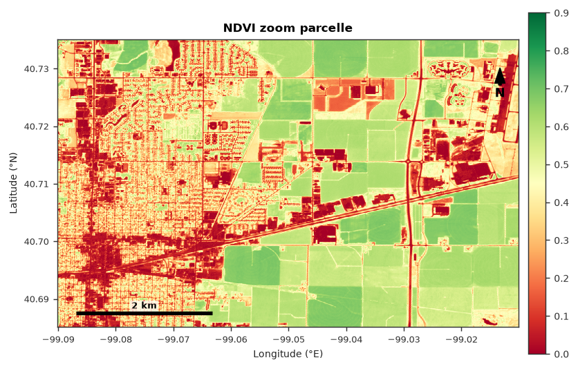
| Provenance | même scène · NDVI zoom parcelle |
|---|
🔎 Ce que c'est : NDVI sur la même emprise réduite : contraste entre parcelles irriguées rondes et coins anguleux secs.
💡 Ce que j'en tire : Montre ce que le scoring pourrait ingérer : NDVI moyen par champ, détection de zones faibles.
✅ ÉCHELLE PARCELLE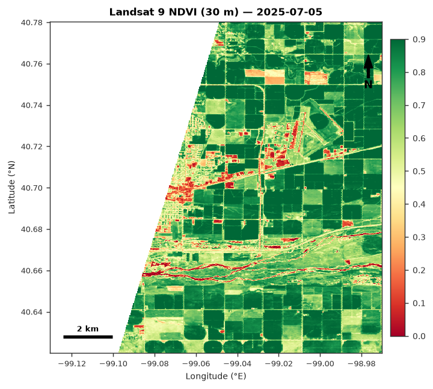
| Provenance | Landsat 9 L2 · LC09 2025-07-05 · -99.130…-98.970°E · 40.620…40.780°N · ≈14 × 18 km · rés 30.0 m |
|---|
🔎 Ce que c'est : NDVI 30 m Landsat, même zone : signal identique à S2 mais plus grossier.
💡 Ce que j'en tire : Confirmé : mêmes patrons. Son vrai atout = l'archive 50 ans (rotations historiques avant CDL) + la thermique.
🟡 REDONDANT avec S2 ici — atout = archive+LST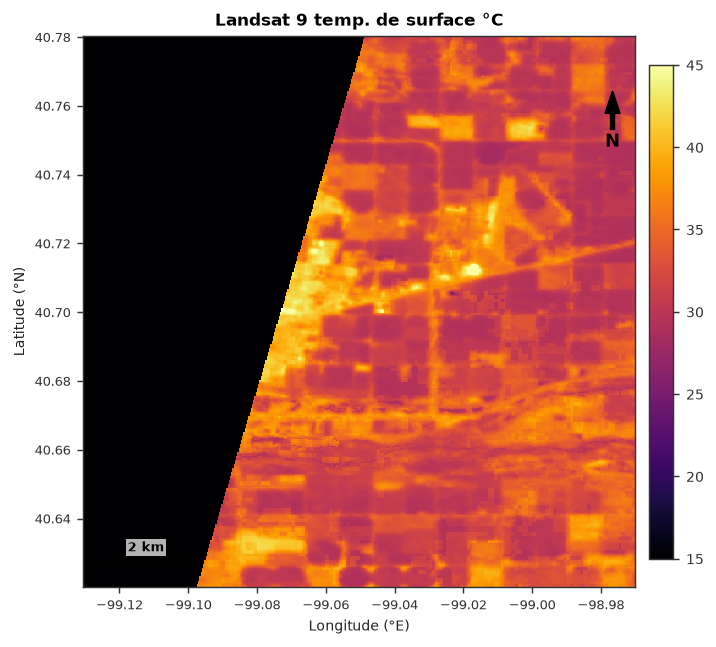
| Provenance | même scène · bande thermique lwir11 · -99.130…-98.970°E · 40.620…40.780°N · ≈14 × 18 km · rés 30.0 m |
|---|
🔎 Ce que c'est : Température de surface le 5/07 : les zones sèches/nues chauffent (orange-blanc), l'irrigué et la rivière restent frais.
💡 Ce que j'en tire : Très parlant : carte de stress thermique des parcelles — directement lié au 'heat stress' du brief. Alternative si ECOSTRESS indisponible.
✅ UTILE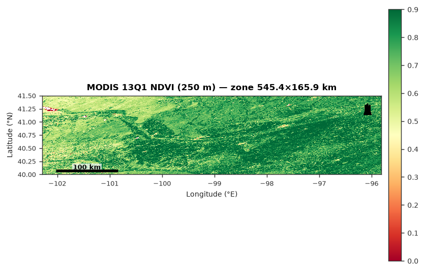
| Provenance | MODIS 13Q1 · tuile h10v04 · composite 16 j · -102.284…-95.817°E · 40.000…41.500°N · ≈545 × 166 km · rés 231.7 m |
|---|
🔎 Ce que c'est : NDVI 250 m sur une région ~560×165 km : le gradient est-ouest des grandes plaines.
💡 Ce que j'en tire : À 250 m on perd le champ mais on gagne la SÉRIE : 8/16 jours, 25 ans d'archive → phénologie et comparaison d'années. Contexte régional, pas parcelle.
🟡 CONTEXTUEL (phénologie, historique)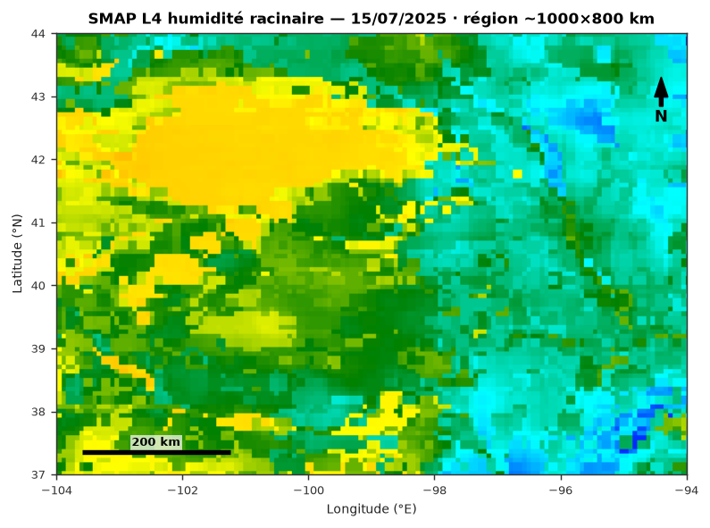
| Provenance | GIBS WMS · SMAP_L4_Analyzed_Root_Zone_Soil_Moisture · 15/07/2025 · -104.000…-94.000°E · 37.000…44.000°N · ≈846 × 774 km · rés tuile rendue (~native) |
|---|
🔎 Ce que c'est : Humidité du sol RACINAIRE (0-100 cm) assimilée, grille ~9 km : le Nebraska en bleu (humide) vs Kansas au sud plus sec.
💡 Ce que j'en tire : Le produit le plus pertinent du brief pour l'eau — racinaire = ce que boit la culture. MAIS 9 km = contexte régional, pas parcelle. En prod : valeurs via earthaccess+login ; ici les tuiles GIBS suffisent pour illustrer.
✅ UTILE en contexte / ⚠️ jamais champ-level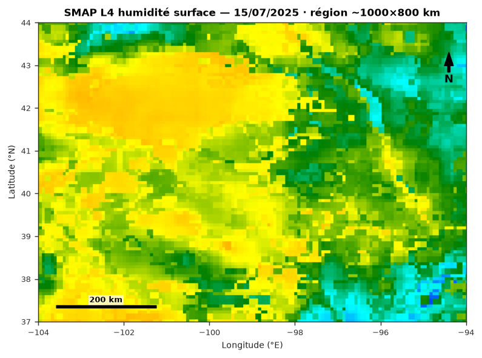
| Provenance | GIBS WMS · SMAP_L4 surface · 15/07/2025 · -104.000…-94.000°E · 37.000…44.000°N · ≈846 × 774 km · rés tuile rendue (~native) |
|---|
🔎 Ce que c'est : Humidité des 5 cm de surface le même jour.
💡 Ce que j'en tire : La surface sèche plus vite que le racinaire — comparer les deux montre la structure verticale de la sécheresse. Même limite : 9 km.
🟡 CONTEXTUEL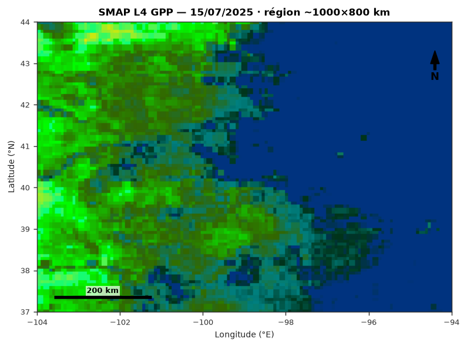
| Provenance | GIBS WMS · SMAP_L4_Mean_GPP · 15/07/2025 · -104.000…-94.000°E · 37.000…44.000°N · ≈846 × 774 km · rés tuile rendue (~native) |
|---|
🔎 Ce que c'est : Production primaire brute (carbone fixé) estimée par le modèle SMAP L4.
💡 Ce que j'en tire : Proxy productivité végétale régional ; la famille carbone L4 (GPP/respiration/NEE) est un vrai sous-dataset distinct comme demandé — utile en argument 'santé des sols/biomasse' mais pas prioritaire.
🟡 BONUS SCIENCE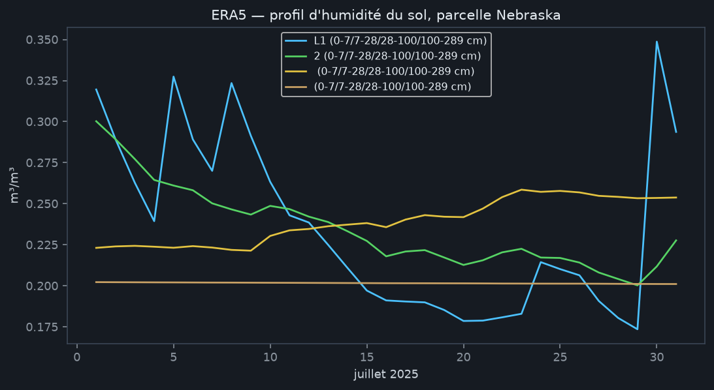
| Provenance | ERA5 Zarr cloud · point -99.05, 40.70 · juillet 2025 · couches sol 1-4 |
|---|
🔎 Ce que c'est : Profil d'humidité du sol quotidien : 0-7 cm, 7-28, 28-100, 100-289 cm.
💡 Ce que j'en tire : Données BRUTES réelles (~0.20-0.24 m³/m³) : on voit la surface sécher après juillet pendant que les couches profondes restent stables — la réserve sur laquelle la culture compte. Accès libre, aucun login — meilleur substitut à NLDAS/GLDAS.
✅ TRÈS UTILE — profil sol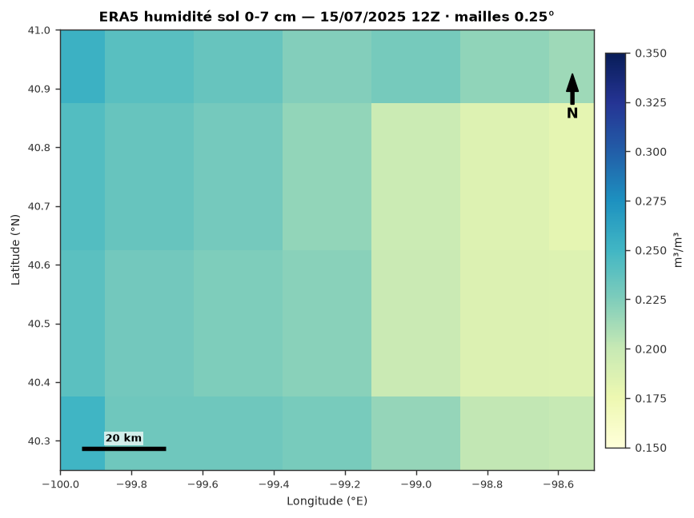
| Provenance | ERA5 · maille régionale 0.25° · 15/07/2025 · -100.000…-98.500°E · 40.250…41.000°N · ≈127 × 83 km · rés 0.25° (~28 km) |
|---|
🔎 Ce que c'est : Carte de l'humidité 0-7 cm : mailles de ~28 km, le point est une maille.
💡 Ce que j'en tire : Illustre honnêtement la résolution : 1 maille ERA5 ≈ toute la zone de démo. À utiliser en série temporelle de contexte, jamais en carte de champ.
🟡 CONTEXTUEL — honnêteté de résolution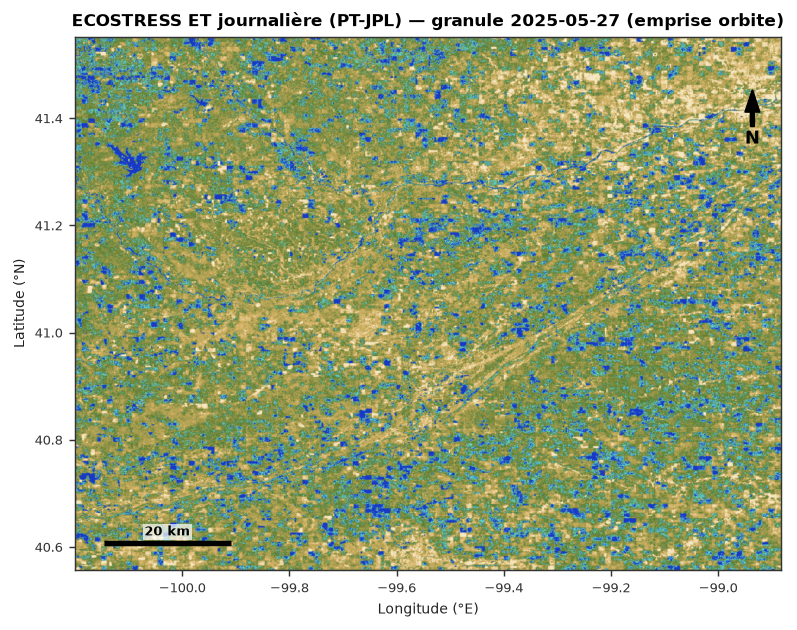
| Provenance | Granule ECO_L3T_JET 2025-05-27 · image browse NASA · -100.199…-98.883°E · 40.557…41.552°N · ≈110 × 110 km · rés ? |
|---|
🔎 Ce que c'est : Évapotranspiration journalière (PT-JPL) d'une bande orbitale ISS — le granule contient notre point.
💡 Ce que j'en tire : Produit phare du brief (stress hydrique réel à ~70 m). MAIS : passage ISS irrégulier, nuages, login Earthdata pour les valeurs. Les images browse (publiques) suffisent pour une démo crédible.
✅ FORT EN DÉMO / ⚠️ dispo sporadique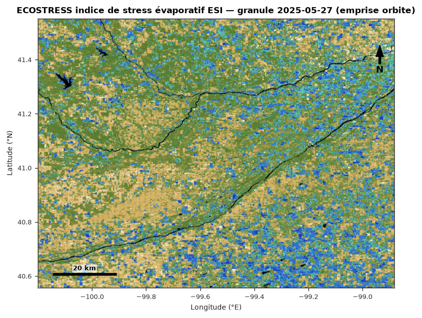
| Provenance | Granule ECO_L4T_ESI · même date · -100.199…-98.883°E · 40.557…41.552°N · ≈110 × 110 km · rés ? |
|---|
🔎 Ce que c'est : Indice de stress évaporatif : fraction d'ET réelle / ET potentielle — 1 = pas de stress.
💡 Ce que j'en tire : Encore plus direct que l'ET brute : un score de stress lisible par un agronome. Mêmes limites de dispo.
✅ FORT EN DÉMO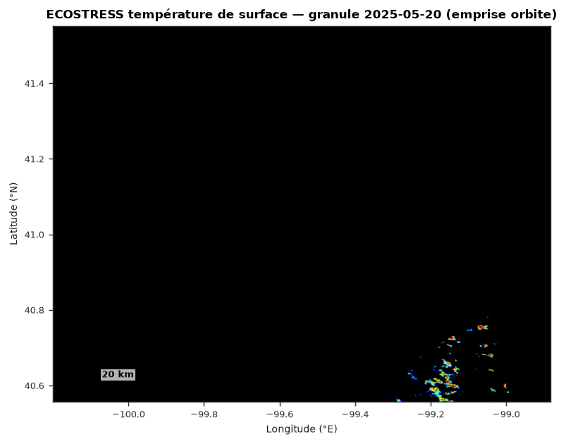
| Provenance | Granule ECO_L2T_LSTE 2025-05-20 · -100.199…-98.883°E · 40.557…41.552°N · ≈110 × 110 km · rés ? |
|---|
🔎 Ce que c'est : Température de surface à ~70 m — encore plus fin que Landsat thermique.
💡 Ce que j'en tire : Confirmé dispo en browse ; en backup Landsat LST couvre le besoin de façon régulière.
🟡 REDONDANT avec Landsat LST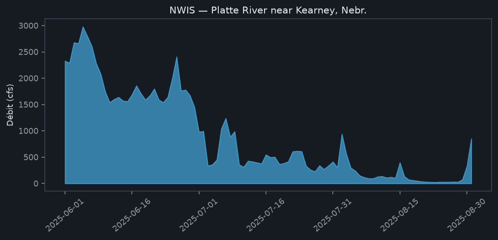
| Provenance | API NWIS iv · site 06770200 Platte River near Kearney · juin-août 2025 |
|---|
🔎 Ce que c'est : Débit quotidien réel de la Platte : ~500-1500 cfs, moyenne 874 cfs (~25 m³/s).
💡 Ce que j'en tire : La Platte borde la zone au sud — c'est l'eau de surface qui alimente les canaux d'irrigation locaux. Lien direct eau↔irrigation du brief ; API REST gratuite sans clé.
✅ UTILE — volet eau de surface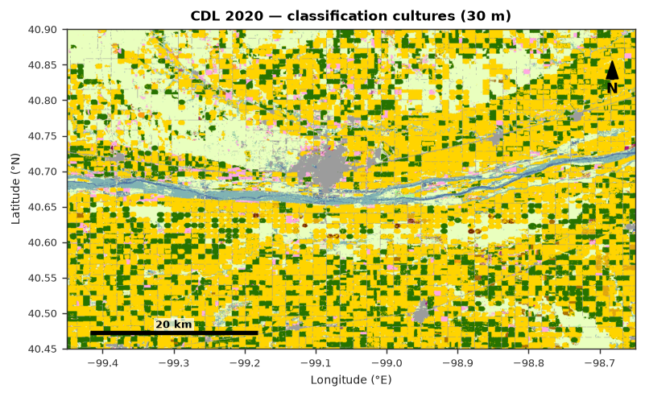
| Provenance | WMS CropScape · cdl_2020 · -99.450…-98.650°E · 40.450…40.900°N · ≈68 × 50 km · rés 30 m source / rendu WMS |
|---|
🔎 Ce que c'est : Carte nationale classée 30 m : maïs jaune, soja vert foncé, alfalfa rose, eau bleue, ville grise.
💡 Ce que j'en tire : Chaque année reclassée → on reconstruit l'HISTORIQUE de rotation champ par champ (voir tableau). Jaune dominant = maïs ~45% de la zone.
✅ CŒUR ROTATION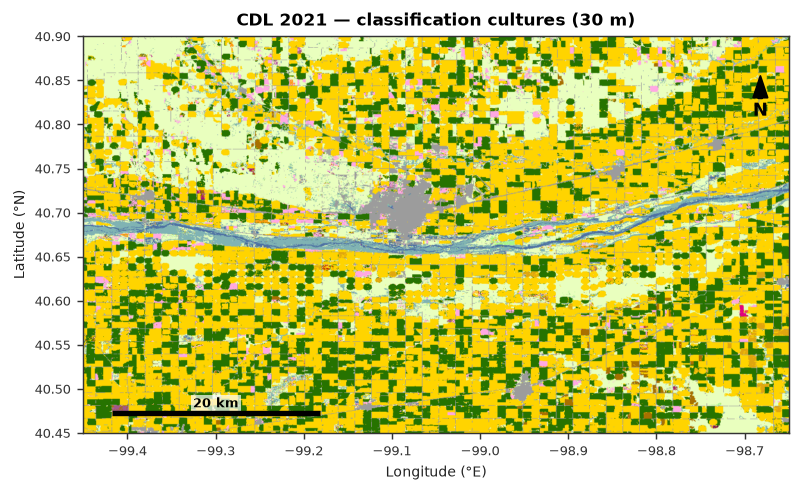
| Provenance | cdl_2021 · même emprise |
|---|
🔎 Ce que c'est : Idem 2021.
💡 Ce que j'en tire : Comparaison pixel-par-pixel : les champs alternent jaune↔vert — la rotation maïs/soja est lisible directement.
✅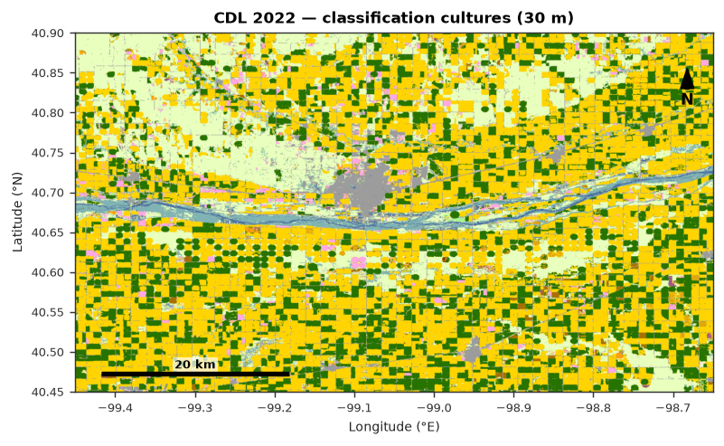
| Provenance | cdl_2022 · même emprise |
|---|
🔎 Ce que c'est : Idem 2022.
💡 Ce que j'en tire : Confirme la stabilité du système maïs-soja + prairies permanentes.
✅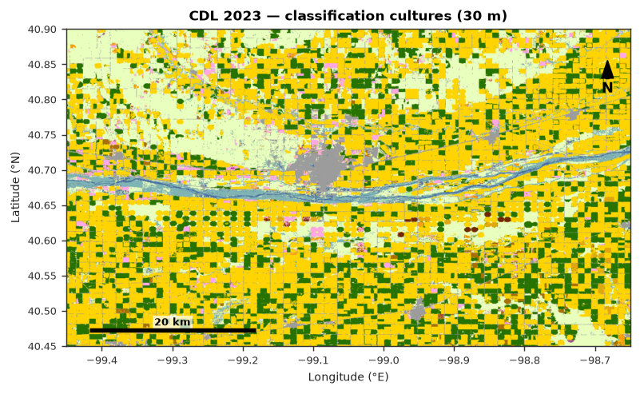
| Provenance | cdl_2023 · même emprise |
|---|
🔎 Ce que c'est : Idem 2023.
💡 Ce que j'en tire : La ville de Kearney et la Platte servent de repères visuels.
✅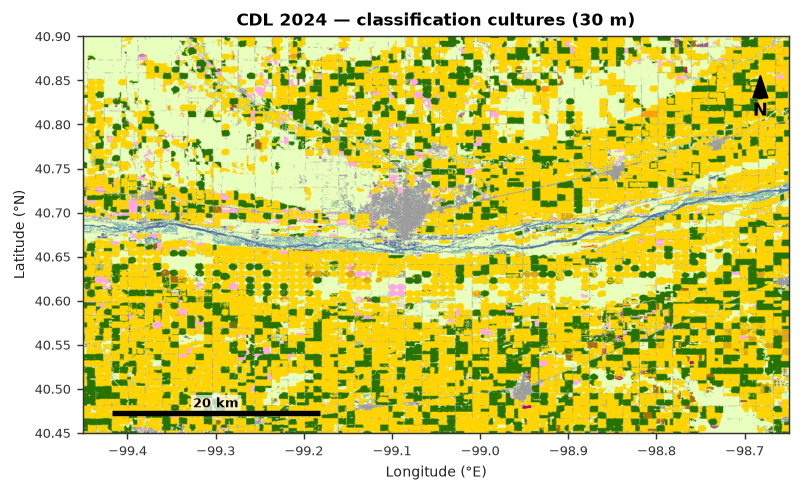
| Provenance | cdl_2024 · même emprise |
|---|
🔎 Ce que c'est : Idem 2024 (plus récente dispo à l'écriture).
💡 Ce que j'en tire : Extension à 2025 possible : la couche cdl_2025 existe déjà.
✅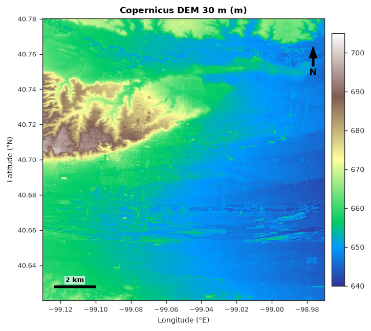
| Provenance | Copernicus DEM GLO-30 · -99.130…-98.970°E · 40.620…40.780°N · ≈14 × 18 km · rés 0.0 m |
|---|
🔎 Ce que c'est : Altitude 640-702 m : la vallée de la Platte (bas, au sud) et les plateaux de loess.
💡 Ce que j'en tire : Plat mais pas plat : le riverbottom est en creux — utile pour l'irrigation par gravité et le risque de gel/nocturne.
✅ UTILE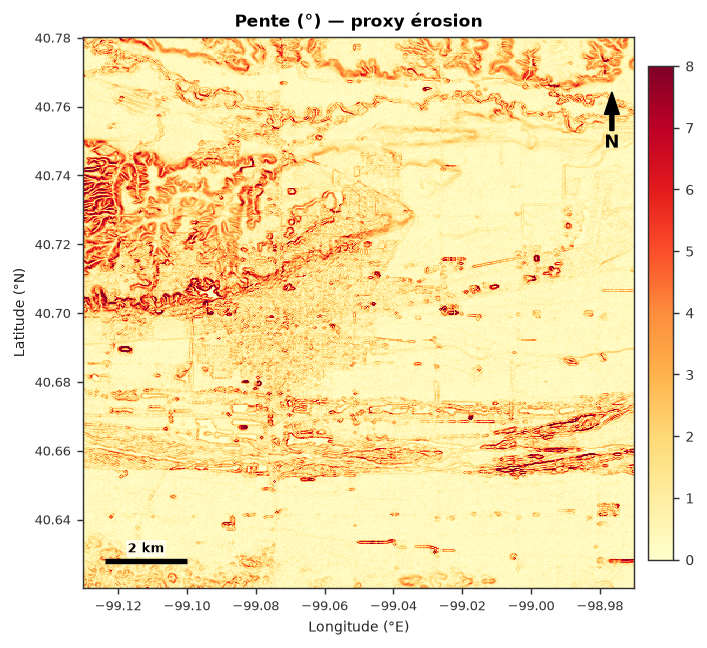
| Provenance | dérivé du même DEM |
|---|
🔎 Ce que c'est : Pente en degrés : la plupart des champs <2°, les berges de rivière et breaks plus raides.
💡 Ce que j'en tire : Proxy érosion/ruissellement immédiat pour le scoring 'soil health' — là où ça penche, couverture végétale obligatoire.
✅ UTILE — entrée du scoring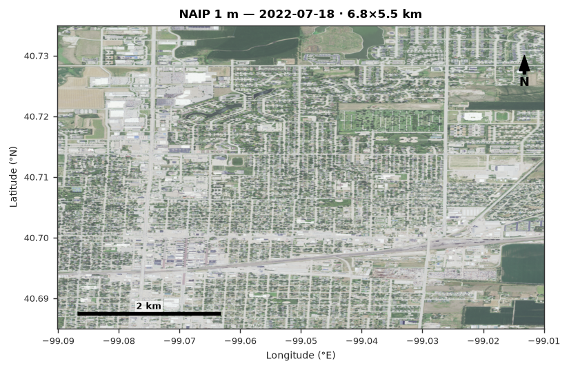
| Provenance | NAIP Planetary Computer · tuile 2022-07-18 · -99.090…-99.010°E · 40.685…40.735°N · ≈7 × 6 km · rés 1.2 m (décimé) |
|---|
🔎 Ce que c'est : Photo aérienne 1 m : pivot d'irrigation, bâtiments de ferme, routes, texture des champs.
💡 Ce que j'en tire : Résolution maximale du lot : on voit les traces de machinisme, les coins non irrigués, l'état du couvert. Sert de 'photo de référence' pour l'agriculteur qui reconnaît SA parcelle.
✅ FORT impact utilisateur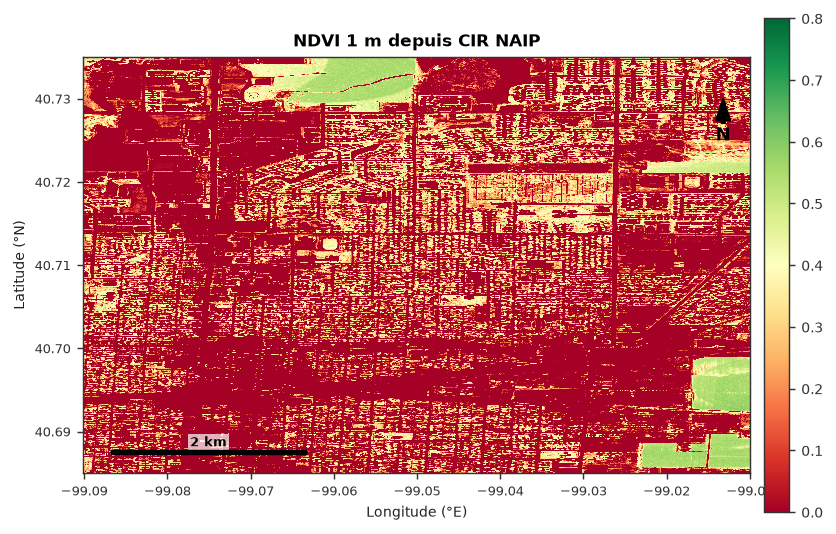
| Provenance | même tuile · canal CIR |
|---|
🔎 Ce que c'est : NDVI calculé à 1 m depuis l'infra-rouge NAIP : chaque plante presque.
💡 Ce que j'en tire : Démo bluffante de précision ; limite : couverture ~1 an sur 3, pas de série temporelle dense.
🟡 IMPRESSIONNANT mais sporadique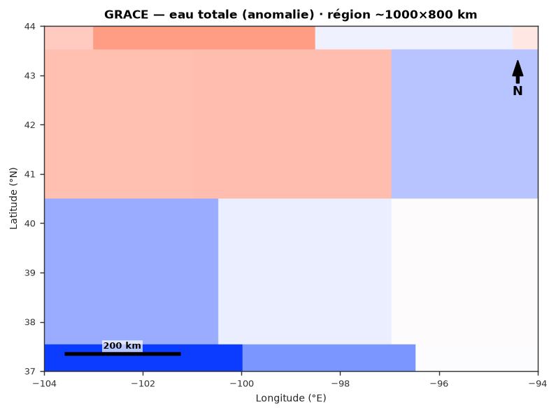
| Provenance | GIBS · GRACE mascon CRI · dernier mois dispo · -104.000…-94.000°E · 37.000…44.000°N · ≈846 × 774 km · rés tuile rendue (~native) |
|---|
🔎 Ce que c'est : Anomalie d'eau totale (sol+nappes) sur mailles de ~300 km.
💡 Ce que j'en tire : L'histoire Ogallala : la nappe qui irrigue la région s'épuise depuis 20 ans — c'est LE narratif eau long-terme du brief. Totalement hors échelle parcelle : narratif/contexte uniquement.
🟡 NARRATIF RÉGIONAL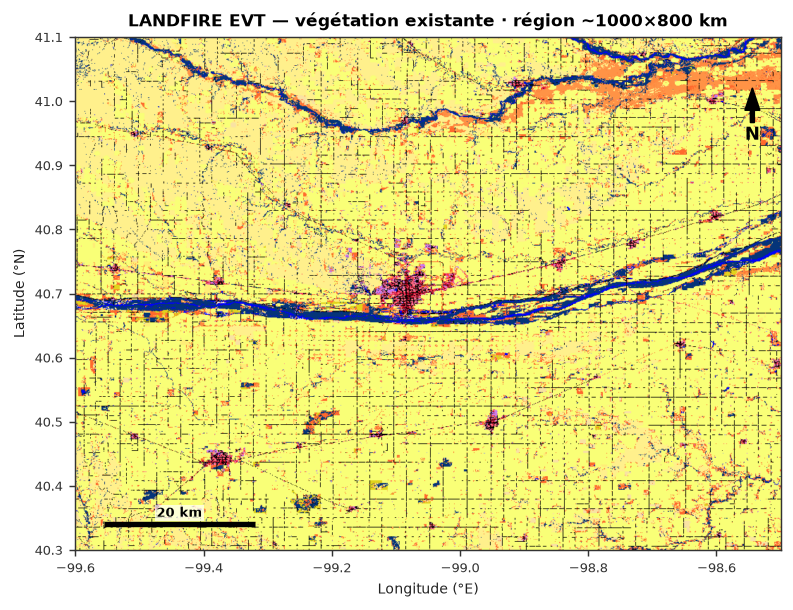
| Provenance | WMS GeoServer USGS · LF2024_EVT_CONUS · -99.600…-98.500°E · 40.300…41.100°N · ≈93 × 88 km · rés 30 m (rendu WMS) |
|---|
🔎 Ce que c'est : Types de végétation existante 30 m : cultures, prairies, riverbottom boisé.
💡 Ce que j'en tire : Chevauche CDL pour l'agri mais apporte le non-cultivé (zones naturelles, ripisylves). Priorité basse pour la rotation — gardez-le pour les habitats/bords de champ.
🟡 SECONDAIRE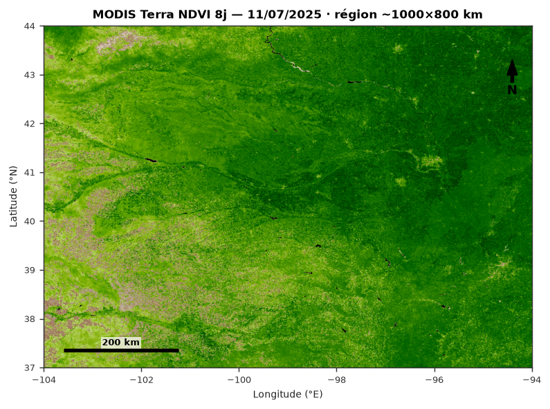
| Provenance | GIBS · MODIS_Terra_NDVI_8Day · 11/07/2025 · -104.000…-94.000°E · 37.000…44.000°N · ≈846 × 774 km · rés tuile rendue (~native) |
|---|
🔎 Ce que c'est : NDVI régional 8 jours.
💡 Ce que j'en tire : Fond de carte instantané sans traitement — pratique, remplacé par MODIS natif pour l'analyse.
🟡 VUE RAPIDE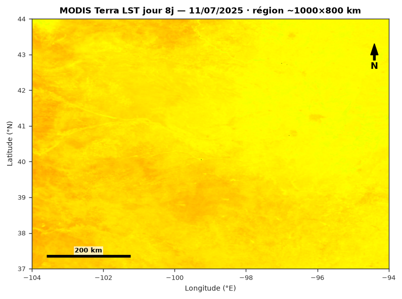
| Provenance | GIBS · MODIS LST 8j jour · 11/07/2025 · -104.000…-94.000°E · 37.000…44.000°N · ≈846 × 774 km · rés tuile rendue (~native) |
|---|
🔎 Ce que c'est : Température de surface régionale 8 jours.
💡 Ce que j'en tire : Montre l'anomalie de chaleur régionale en un clin d'œil.
🟡 VUE RAPIDE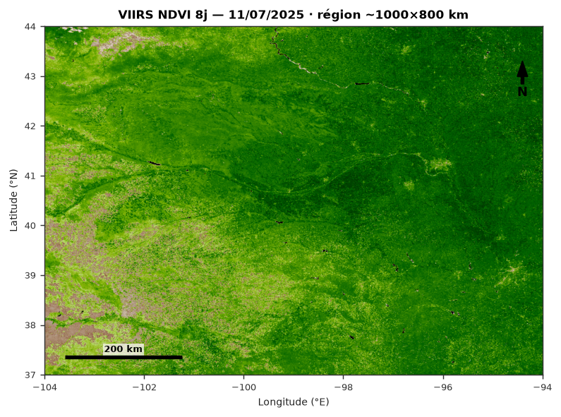
| Provenance | GIBS · VIIRS_SNPP_NDVI_8Day · 11/07/2025 · -104.000…-94.000°E · 37.000…44.000°N · ≈846 × 774 km · rés tuile rendue (~native) |
|---|
🔎 Ce que c'est : NDVI VIIRS — le successeur de MODIS.
💡 Ce que j'en tire : Même rôle que MODIS, prolonge la série au-delà de la fin de vie des satellites Terra/Aqua.
🟡 VUE RAPIDE| Année | 1ʳᵉ classe | 2ᵉ | 3ᵉ | 4ᵉ | 5ᵉ |
|---|---|---|---|---|---|
| 2020 | Corn (47.3%) | Grassland/Pasture (20.5%) | Soybeans (17.8%) | Autre (6.3%) | Open Water (3.6%) |
| 2021 | Corn (44.6%) | Soybeans (21.0%) | Grassland/Pasture (19.8%) | Autre (6.6%) | Open Water (3.6%) |
| 2022 | Corn (44.1%) | Soybeans (21.6%) | Grassland/Pasture (19.8%) | Autre (6.5%) | Open Water (3.7%) |
| 2023 | Corn (46.7%) | Grassland/Pasture (20.0%) | Soybeans (18.3%) | Autre (6.7%) | Open Water (3.6%) |
| 2024 | Corn (46.5%) | Grassland/Pasture (25.5%) | Soybeans (17.4%) | Autre (5.3%) | Alfalfa (1.8%) |
| Symbole | Série de sol | Part | Pente % | Taxonomie | Drainage | MO % | AWC |
|---|---|---|---|---|---|---|---|
| 8493 | Gothenburg | 100.0% | 1.0 | Entisols | Poorly drained | 0.42 | 0.07 |
| 9983 | Pits | 100.0% | 15.0 | Excessively drai | — | — | |
| 8932 | Simeon | 100.0% | 2.0 | Entisols | Excessively drai | 0.5 | 0.11 |
| 9999 | Water | 100.0% | None | — | — | ||
| 8435 | Cass | 100.0% | 1.0 | Mollisols | Well drained | 1.0 | 0.153 |
| 3710 | Cass | 100.0% | 2.0 | Mollisols | Well drained | 0.83 | 0.14 |
| 1038 | Grigston | 100.0% | 1.0 | Mollisols | Well drained | 1.33 | 0.163 |
| 9983 | Pits | 100.0% | 15.0 | Excessively drai | — | — | |
| 8841 | Hall | 100.0% | 2.0 | Mollisols | Well drained | 1.75 | 0.203 |
| 8872 | Hord | 100.0% | 4.0 | Mollisols | Well drained | 1.33 | 0.207 |
| Culture | Non-irrigué | Irrigué |
|---|---|---|
| Corn | 51.5 | 123.6 |
| Grain sorghum | 64.5 | 102.2 |
| Winter wheat | 35.9 | — |
| Alfalfa hay | 3.6 | 4.4 |
| Dry pinto beans | — | — |
| Sugar beets | — | — |
| Soybeans | 37.0 | 47.2 |
| Oats | 60.0 | — |
| Pasture | 2.6 | 9.9 |
Le contraste non-irrigué/irrigué (maïs 51.5 → 123.6 bu/ac) quantifie exactement ce que vaut l'eau ici — argument central pour les rotations économes en eau.
Tout est local : data-test/ (raw = données brutes, maps = cartes géoréférencées, charts = graphiques). → Analyse des 24 ressources